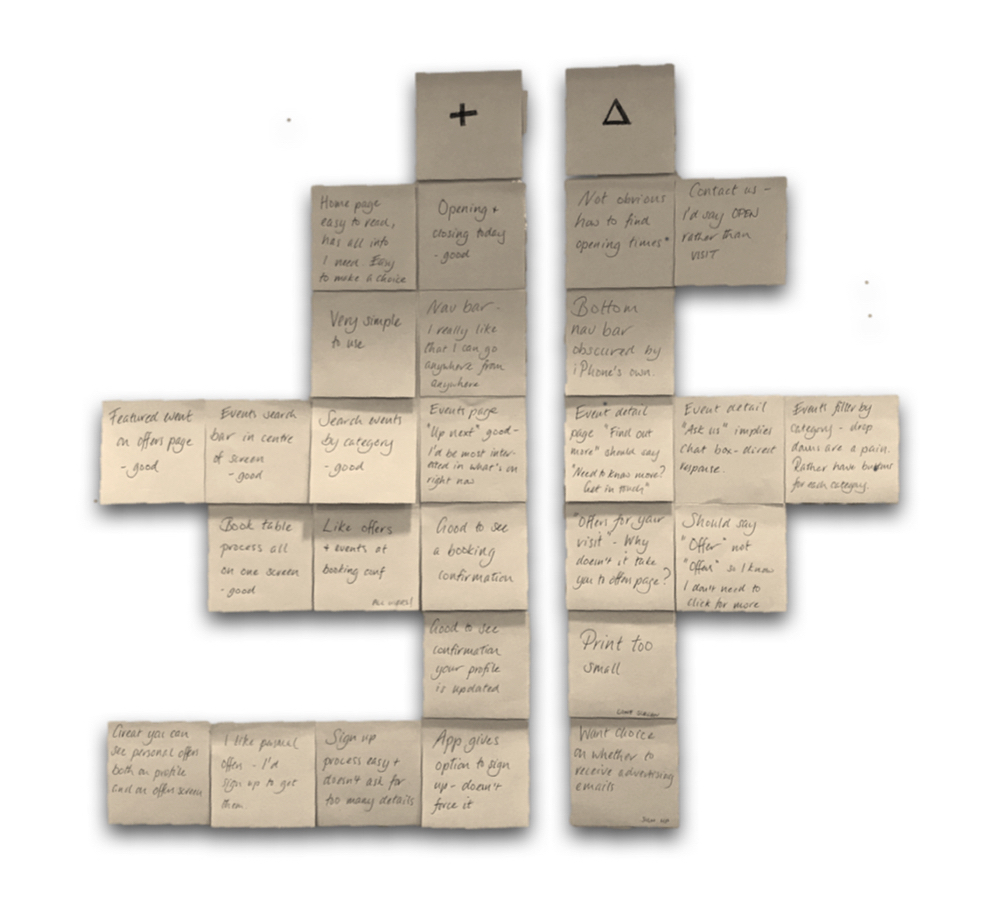
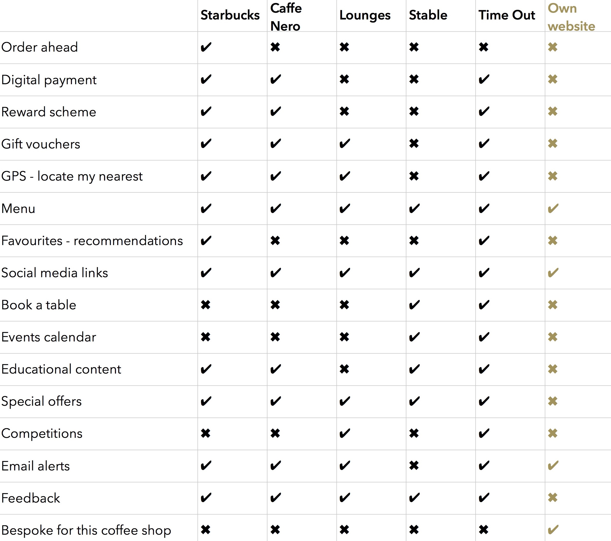
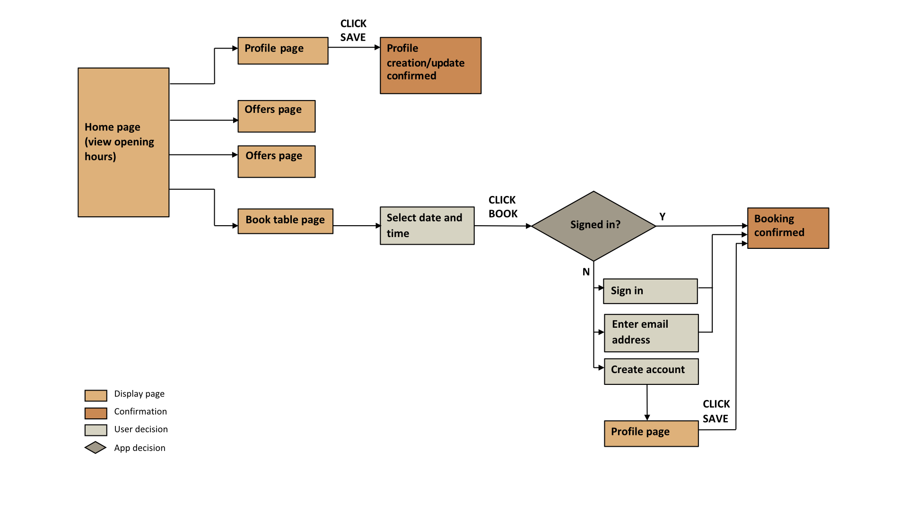
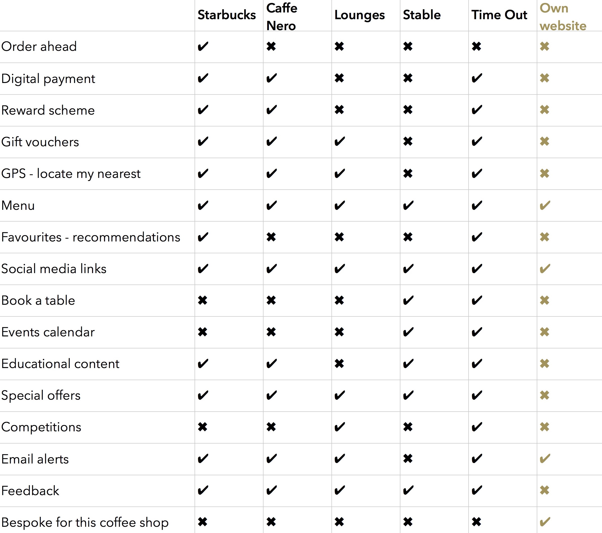
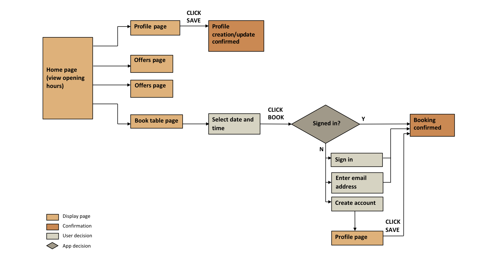

Corner Coffee is an independent coffee bar that takes pride in serving the best coffee and fresh food, sourced locally.
I designed a mobile app to help the business increase customer engagement and achieve its goals:
- Grow the business
- Host more events
- Attract the after-work crowd
My work involed user research, competitive analysis, affinity mapping, user personas, storyboards, feature prioritisation, user journeys, sitemaps, paper prototypes, usability testing, wireframes and clickable prototypes.
READ FULL ANALYSIS
YOU GOTTA HAVE A PLAN

There was a lot of love for Corner Coffee, but inability to plan their visits was a common pain point for customers. Unpredictable closing times and availability of space caused them wasted time, journeys and effort to make alternative arrangements. With jobs that already demanded much of their time, this could lead them to go elsewhere rather than take the risk.
They also experienced frustration when they learned of special events only after they had happened.
An app that allowed customers to view up-to-date information, book tables and benefit from deals would minimise unexpected frustrations and increase value and enjoyment.
DOING THE JOB
Here are my prioritised features, and why I chose them:
Real-time opening information: "We are open, closing at..." or "We are closed", plus a table of usual opening hours. We can't stop the management from closing early, but we can let the customers know.
Deals: Coupons for discounts and offers. Users' number one reason for downloading the app.
Users had requested loyalty points but the underlying need was to receive exclusive savings. This is met by coupons, with no need for extra technology or administration at point of sale for the budget-constrained business.
Book a table: Book ahead, to avoid arriving at the venue and being unable to get a table.
Event listings and search: View all events or search by date and category. Users can find information easily, and the business can advertise events.
Food and drinks menu: Standard on every competitor app. The business can raise awareness of its wider offering.
DON'T MAKE ME WORK TOO HARD
Paper prototype testing revealed the following insights about the design:
- provided all necessary functions, intuitively
- didn't give users the quickest route to achieving their goals
- wasn't proactive in guiding users to special offers and events
Based on this and other user feedback, I designed a
in Sketch with the following improvements:
- simplify the table availability/booking process down to one screen
- take the users on a continuing journey with links on booking and event screens
- split events and offers into their own screens, show all events without the user having to search
- allow users to browse without having to sign up, require a sign up or email for bookings, explain
why the app is requesting the information
Below is a sample of wireframe iterations.
THE GOOD, THE BAD AND THE NOT SO UGLY

"We are open, closing at..." was a huge hit with the users. One user actually cheered!
The app balanced user needs with business goals and budget constraints. A successful first UX project, with some valuable lessons learned:
DITCH THE SMALL PRINT. No matter how beautiful a screen is, if users can't read the text, they won't hang around.
WE'RE NOT OUR USERS. Don't assume they think like us. It wasn't obvious to all users that they could click on "We are open" or "Contact us" to find opening hours. Adding "View opening times" to the homepage saved users having to guess.
DON'T IGNORE YOUR USER PERSONAS. Nobody had asked for a "Find out more" button on the event details page. I added it because I thought it would be useful, but it caused confusion. When I replaced it with a "You might also like", it made sense to the users.
DESIGN FOR THE LAZIEST USER IN THE WORLD. When I simplified the booking process from four clicks down to one, all my users were happy.
WIREFRAMES


 


